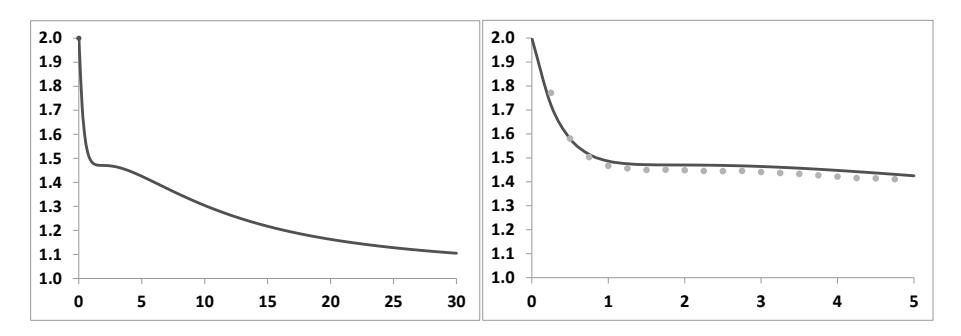
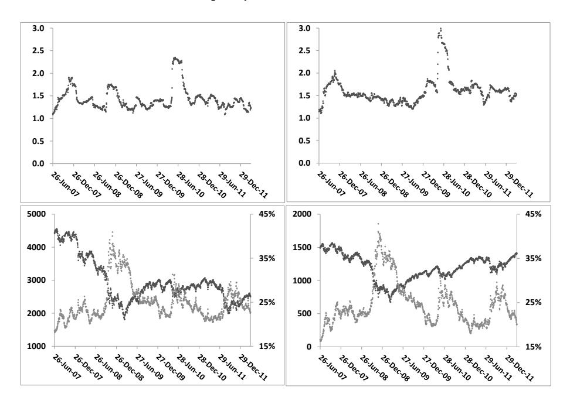
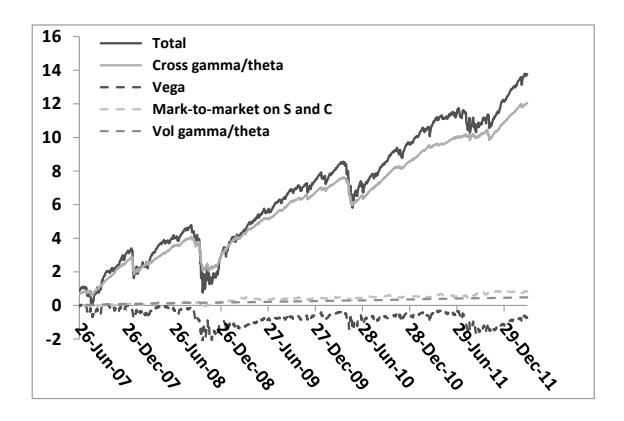
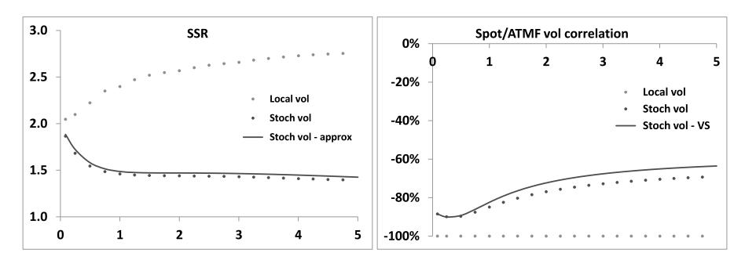
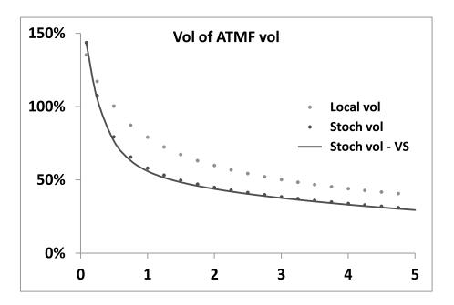

第九章：随机波动率模型的静态与动态性质的关联
本笔记基于 Bergomi《Stochastic Volatility Modeling》第九章，按原书行文结构整理，兼顾数学推导的完整逻辑与交易实务视角。本章是全书理论贯通性最强的章节之一。
目录
- ATMF 偏斜的表达式（§9.1）
- 偏斜粘性比 SSR 的定义（§9.2）
- 短期限极限（§9.3）
- SSR 的模型无关范围（§9.4）
- ATMF 偏斜与 SSR 的标度：模型分类（§9.5）
- Type I 模型：Heston 模型（§9.6）
- Type II 模型（§9.7）
- SSR 的数值计算（§9.8）
- 短期 SSR（§9.9）
- 套利短期 SSR（§9.10）
- 结论：局部波动率 vs. 随机波动率（§9.11）
- 端到端工作流算例
导言：本章在全书中的位置
第八章从扰动展开的角度推导出了随机波动率模型的香草微笑近似公式，建立了 ATMF 偏斜 （静态性质）与现货/方差协方差函数 （动态性质）之间的第一条定量联系。然而第八章的分析是"单向的"——给定动态结构，预测微笑形状；反方向的问题尚未系统回答：从微笑的期限结构形态，能否推断模型动态的哪些特征？两者之间的约束有多紧？
本章正面回答这个问题。核心工具是偏斜粘性比（Skew Stickiness Ratio，SSR）——它在第二章已作为局部波动率模型的特征量出现过（），现在被推广到一般随机波动率模型，成为连接静态微笑与模型动态的枢纽。
本章解决的核心问题是：在扩散型随机波动率模型中，SSR 的取值范围是多少？ATMF 偏斜的期限结构衰减指数与 SSR 的长期极限之间存在什么关系？这些关系是否与市场实证相符？
读完本章笔记，你将掌握以下能力：
- 理解 SSR 的精确定义，并在 N 因子前向方差模型中解析计算（§9.2–9.3）
- 证明扩散随机波动率模型中 SSR 的模型无关区间 （§9.4）
- 将随机波动率模型分为 Type I（指数衰减）和 Type II（幂律衰减）两类，理解分类依据（§9.5–9.7）
- 在双因子模型中实现 Type II 行为，并验证与市场实证的一致性（§9.7）
- 理解短期 SSR 的套利策略及其 P&L 分解（§9.10）
- 定量比较局部波动率与随机波动率模型在 SSR 和 vol of vol 上的结构性差异（§9.11）
两章对比的纵向视角
ATMF 偏斜和 SSR 是贯穿第二章和第九章的两条主线，但两章处理它们的语境根本不同。第二章的局部波动率模型是一维马尔可夫模型——状态变量只有 ，偏斜和 SSR 均被市场微笑截面唯一锁定，没有任何独立的自由度。第九章的随机波动率模型引入了独立的波动率随机性， 成为可以独立设定的函数，偏斜与 SSR 之间的约束关系（式 9.13）才得以在比较的意义上被研究。
下表是两章核心结论的对比，可以作为读本章的导航：
| 性质 | 局部波动率（第二章） | 随机波动率（第九章） |
|---|---|---|
| 偏斜来源 | 对 的偏斜，由市场微笑 Dupire 公式唯一确定 | 对 的双重积分，由模型动态参数决定 |
| 偏斜期限衰减 | 由局部波动率函数的期限结构决定，典型幂律但衰减速率由 内生 | 由 的衰减指数 决定：Type I ，Type II |
| SSR 的来源 | ，由 函数形状决定 | 由 的时间加权结构决定（式 9.4） |
| SSR 短期值 | （对时间无关 LV 对所有期限成立） | （扩散模型的普遍结果） |
| SSR 长期值 | （典型值 3） | ，Type I 趋向 1，Type II 趋向 |
| vol of vol | ，被微笑完全锁定 | 由 （vol of vol 幅度）独立设定，与微笑解耦 |
| 与市场实现的比较 | 长期 SSR 偏高（约 3），vol of vol 偏高；未来偏斜衰减过快 | 长期 SSR 约 1.5，与市场实现值吻合；vol of vol 可独立校准 |
| Vanna 盈亏平衡水平 | ，随重校准跳变，长期偏高 | 由稳定参数 决定，接近市场实现 |
1. ATMF 偏斜的表达式（§9.1）
研究动机
第八章 §8.6 推导了一般随机波动率模型的 ATMF 偏斜，结果由现货/方差协方差函数 的双重时间积分决定（式 8.52）。本节将这一结果改写为更直观的形式，为后续 SSR 的推导做准备。
这个改写的意义在于：ATMF 偏斜和 SSR 将被表达为同一个函数 的不同积分，两者之比就是 SSR。理解两者在积分中的结构差异，是理解为什么 SSR 的极限值受到制约的关键。
在一般前向方差模型框架下，令 ，利用式（8.13）对 的定义，ATMF 偏斜在 vol of vol 一阶近似下为：
改写为与第二章对应的形式（式 8.24）：
式（9.2）的经济直觉：权重 在 最大、 时归零——越接近到期，当前时刻的现货/波动率协方差对偏斜的贡献越小。若市场在所有时刻的现货/波动率关系均为负相关（下跌时波动率上升），式（9.2）给出负偏斜，与直觉完全吻合。
与第二章的对比：第二章的偏斜公式（式 2.48）为 ，其中 是局部波动率函数在 时刻的对数偏斜，是一个确定性函数，完全由校准后的 决定。式（9.2）的协方差 则是一个随机过程的瞬时协方差速率，可以独立于当前微笑截面设定——这正是随机波动率框架的根本差异。局部波动率模型中，"波动率的随机性"完全来自现货的随机性（ 是 的函数），两者协方差被微笑锁定；随机波动率模型中，波动率有独立的随机驱动，协方差通过 参数独立设定。偏斜的公式形式相同，但生成机制截然不同。
2. 偏斜粘性比 SSR 的定义（§9.2）
研究动机
偏斜描述的是静态微笑的形状——固定时刻，不同行权价的隐含波动率如何分布。但交易员日常关心的另一个核心问题是：当现货移动时，ATMF 波动率会移动多少？ 这个量直接决定了奇异期权账簿中 Vanna 头寸的每日 P&L。
将 除以 ATMF 偏斜 归一化，得到无量纲的 SSR：
各类模型的极限情形：
- 跳扩散/Lévy 模型（独立平稳增量）： 只是 moneyness 的函数，，
- 局部波动率模型：，短期精确等于 2，长期通常大于 2（典型值 2.5–3）
在 vol of vol 一阶近似下，ATMF 与 VS 波动率偏差为一阶小量，可以将 ATMF 替换为 VS 波动率来计算 ，由此得到 的解析表达式：
结构解读：分子 只在 时刻求值（来自 SSR 定义中的瞬时协方差）；分母 是 对整个 的双重积分（来自偏斜）。SSR 衡量的是"当前时刻的现货/波动率协方差"相对于"整段时间平均协方差"的比率。当 随 增大而衰减时，分子（只看 ）相对更大，SSR 偏高。
与第二章的对比：局部波动率模型是一维马尔可夫系统， 是 的确定性函数，SSR 退化为偏导数之比：（式 2.61）。这个比值完全由校准后的局部波动率曲面决定，不存在任何独立调节空间。式（9.4）在随机波动率框架下则不同： 是可以独立设定的参数，SSR 因此成为模型的一个自由度，可以通过调节 和 来控制。这是随机波动率模型相对于局部波动率的核心优势之一。
3. 短期限极限（§9.3）
研究动机
§9.2 的式（9.4）给出了一般期限 的 SSR。短期限是最具物理清晰性的特殊情形：当 ，任何扩散模型都退化为瞬时局部近似，模型之间的长期差异消失，SSR 应趋向一个与模型无关的普遍值。这一极限值将与第二章的局部波动率结论精确吻合，从而验证两套框架的一致性。
对偏斜取 极限，利用 和 ：
短期 ATMF 偏斜是 时刻瞬时现货/方差协方差的直接度量。
对 SSR 取 极限：
这一结果完全模型无关：无论 的具体形式，只要它在 处连续，短期 SSR 恒为 2。
这个"2"有明确来源：它就是式（8.36）中分母里的那个 2——偏斜公式中的双重积分在 时给出 ，而 SSR 定义中的单重积分给出 ，比值恰好为 2。从第二章到第九章，这个"2"以不同面目反复出现，背后是同一个几何事实：将恒等函数在三角形区域上积分，得到矩形面积的一半。
与第二章的对比：第二章对时间无关局部波动率给出了更强的结论： 对所有期限 精确成立（式 2.66），而不仅仅是短期极限。其证明利用了前向—后向对称性（式 2.78）。在随机波动率框架中， 仅是短期普遍值，长期则根据 的衰减形式偏离 2。这一差异是两类模型最本质的动态区别之一：局部波动率将协方差"冻结"在由微笑决定的固定水平上，随机波动率则允许协方差随期限以独立的方式演化。
4. SSR 的模型无关范围（§9.4）
研究动机
§9.3 证明了短期 SSR 普遍等于 2。本节在更宽松的假设下，证明一个更有力的结论：对于所有满足时间齐次性和 单调衰减的扩散随机波动率模型，SSR 的取值范围被限制在 内。这个区间是模型无关的——它不依赖模型的具体动态形式，只依赖两个自然的经济假设。
设定简化：假设 VS 波动率期限结构平坦（），且模型时间齐次（），记 （其中 ）。则：
引入辅助函数 ，则式（9.5）和（9.6）可以改写为（分部积分）：
SSR 的双侧界：假设 单调衰减至零（自然的经济假设：现货/方差协方差随时间间隔增大而减小）。
-
下界 ： 是 与其在 上平均值的比。由于 单调递增（）， 是 上 的最大值，故 ，即 。
-
上界 ： 是单调递增的凹函数（因为 单调递减），故 （凹函数在直线之上）。因此 ，即 。
经济直觉：
- 下界 对应"粘性行权价"（sticky-strike）极限：ATMF 波动率对现货移动的响应恰好等于偏斜乘以 1。这发生在 急剧衰减至零时——远期 几乎为零，整个偏斜集中在短时间内，SSR 趋向其长期极限 1。
- 上界 对应局部波动率模型的行为：协方差函数 在短时间内集中（相当于 ），给出最大可能的 SSR。
为什么局部波动率处于上界：局部波动率的 实际上是一个退化的形式——在 §7.1 的表中已经指出，局部波动率对应 的 处的 delta 函数，即所有现货/波动率协方差都集中在"当下这一瞬间"，无法扩散到未来。由式（9.6），若 ，则分子为 ，分母为 （三角形面积），SSR 精确等于 2。换言之， 是"协方差完全集中于当下"的特征值，扩散随机波动率模型将协方差分摊到 的各个时刻，分母（平均值）相对于分子（当前值）的差距缩小，SSR 必然低于 2。这也从数学上解释了为什么第二章的局部波动率结论（）是扩散框架中 SSR 的天花板。
重要注意：这个区间 在扩散框架下是严格约束。若市场实现的 SSR 小于 1，必然意味着存在跳或 Lévy 成分，纯扩散模型无法捕捉。这一观察将在 §9.9 中通过历史数据验证——短期实现 SSR 确实系统性低于 2，而期限较长（2年）的 SSR 约为 1.5，恰好落在区间内。
VS 期限结构的影响：上述 区间在平坦 VS 期限结构下严格成立。由式（9.3）可见，SSR 的分母包含瞬时方差 ，若短端 VS 波动率显著高于长端，SSR 的分母会人为偏大，计算出的 SSR 可能低于 1。这不意味着套利机会——只是 SSR 指标本身对 VS 期限结构敏感，在评估某具体市场的 SSR 时需谨慎解读，建议用 VS 波动率 替代 作为归一化基准（式 9.16b 的近似做法）。
5. ATMF 偏斜与 SSR 的标度：模型分类（§9.5）
研究动机
§9.4 建立了 SSR 的区间约束 ，但区间内的具体取值取决于 的衰减速率。本节通过分析 的幂律衰减 ，导出两类模型的长期行为：ATMF 偏斜的期限衰减指数，以及 SSR 的长期极限。两者被一个简洁的幂律关系联系起来，形成随机波动率模型的自然分类体系。
市场实证表明，ATMF 偏斜随期限以近似幂律衰减（指数约 ），显著慢于 。这一事实要求模型的 也以幂律缓慢衰减——即 ，对应 Type II 模型。
假设 （），分析 的大 行为：
再代入式（9.8）分析 的大 行为：
Type I（，快速衰减）：
Type II（，幂律缓慢衰减）：
两种类型的统一关系（对 ）：
这是本章最重要的公式：ATMF 偏斜的长期衰减指数与 SSR 的长期极限之间的精确关系，既是可从微笑推断动态的理论基础，也是对比模型与市场的核心检验。
经济直觉： 是偏斜的衰减速率。 越大（接近 2），衰减越慢（接近 ，不衰减）； 越小（接近 1），衰减越快（，Lévy 极限）。Type II 行为对应 ，给出介于两个极端之间的幂律衰减——正是市场所观察到的。
| 模型类型 | 衰减指数 | 偏斜期限标度 | 典型代表 | |
|---|---|---|---|---|
| 跳扩散/Lévy | — | 0（） | VG、NIG | |
| Type I（指数衰减） | 1 | Heston | ||
| 局部波动率 | （由微笑内生） | （同 Type II） | （典型值 3） | Dupire |
| Type II | （典型值 1.5） | 双因子前向方差 | ||
| 市场观测（权益指数） | Euro Stoxx 50、S&P 500 |
局部波动率的 由式（2.81）给出：，对 给出 3，超出了随机波动率模型的理论上界 2。这不是矛盾——局部波动率的 SSR 定义方式不同（ 是 的函数，SSR 由偏导数计算），其上界证明不适用于有限维马尔可夫模型。关键点在于：同一张微笑，局部波动率预测的 Vanna 盈亏平衡水平（）是双因子模型的 2 倍，两者对奇异期权的 P&L 归因将系统性偏离。
指数衰减 Type I：若 （Heston 的情形），则 （常数），自动满足 （事实上衰减指数 ），给出 Type I 行为。马尔可夫性（指数衰减是有限维马尔可夫的充要条件）与 Type I 行为之间因此存在内在关联。
Type II 的困难：真正的 Type II 模型需要 （），对应前向方差的 vol of vol 函数 （见式 9.17）。这样的模型丢失了马尔可夫表示——无法用有限维状态变量驱动整条方差曲线，数值不可行。幸运的是，双因子模型通过选取合适的参数，可以在**实用的期限范围（1月至5年）**内近似出 Type II 行为，如下节所示。
6. Type I 模型：Heston 模型（§9.6）
Heston 模型是 Type I 的典型代表。其 指数衰减（式 8.48），给出长期偏斜 和 。
利用第六章的 ATMF 偏斜一阶展开（式 6.19a）：
确实是 型。对 关于 求导（保持零阶精度），再利用 ，得到：
除以式（9.14）即得 ，验证了 Type I 行为。
7. Type II 模型（§9.7）
7.1 双因子模型的 Type II 近似
N 因子前向方差模型的 ，由指数叠加构成，长期必然退化为 Type I（最小的 主导）。但通过选取 ，可以在 到 之间的"中间区间"实现 Type II 近似。
使用第八章表 8.2 的参数（, , , , ），双因子模型在 1月至 5年期限内给出约 和 （图 9.1），与式（9.13）预测的 完美符合。

图 9.1：双因子模型的 SSR（表 8.2 参数）。左图：长至 30年；右图：放大 5年内。短期 ，中期（1–5年）稳定在 1.5 左右（Type II 台阶），极长期趋向 1（Type I）。
7.2 市场实证：权益指数的 Type II 行为
图 9.3 展示 Euro Stoxx 50 和 S&P 500 的实现 SSR（ 年，3月滚动窗口）：

图 9.3：Euro Stoxx 50（左）和 S&P 500（右）的实现 SSR（2年期，2005–2013）。两个指数的 SSR 均在 1.5 附近波动，与双因子模型的 Type II 预测一致。
平均实现 SSR 约 1.5，落在区间 内，且与 Type II 预测 （）定量符合。市场动态确实表现为 Type II 而非 Type I。
8. SSR 的数值计算（§9.8）
在双因子模型中，ATMF 波动率是 的函数，SSR 可通过有限差分直接计算：
其中 是小偏移（通常取 0.01）。对 Heston 类模型（状态变量为 ），更简单：
9. 短期 SSR（§9.9）
短期（ 月）SSR 的实现值（，式 9.23）定义为：
图 9.4 显示，Euro Stoxx 50 和 S&P 500 的实现短期 SSR 平均约 1.5–1.6，系统性低于模型隐含的 2。这一差异可以被物化为期权策略的 P&L，见下节。
10. 套利短期 SSR（§9.10）
10.1 策略设计
使用对数正态微笑模型（, 由短期微笑校准），构造 Gamma 中性的期权价差：卖出 95% 看涨 + 买入 105% 看涨，保持现货 Gamma 为零，每日 Delta 对冲。
carry P&L 的交叉 Gamma 项（式 9.29b）：
若实现 ，空头交叉 Gamma 盈利。
10.2 回测结果（Euro Stoxx 50，2007–2012）
- 平均实现 ATM 偏斜：6 vol pts
- 平均实现偏斜：4.8 vol pts（80% of 隐含）
- 对应实现 SSR：（vs. 隐含 2）
- 累计交叉 Gamma/Theta P&L：约 9€（图 9.8）

图 9.8：累计 P&L 分解。交叉 Gamma/Theta（深色）贡献约 9€，验证了"实现偏斜系统性低于隐含"。
11. 结论：局部波动率 vs. 随机波动率（§9.11）
11.1 SSR 的结构性差异
图 9.9 对比同一微笑下两类模型的 SSR：

图 9.9：双因子随机波动率（深色）vs. 局部波动率（浅色）。校准于相同香草微笑。短期两者均为 2，但长期局部波动率 （式 2.81， 时 ），随机波动率稳定在 1.5（Type II 台阶）。
为什么同一张微笑下 SSR 如此不同：局部波动率将所有现货/波动率协方差集中在"现在这一瞬间"（），导致 SSR 恒高；随机波动率的协方差分布在整个 区间， 时的 不为零，分母（时间平均协方差）比分子（当前协方差）更大，SSR 被"拉低"到 1.5 附近。两个模型校准了相同的当前微笑截面——两者的 完全一致——但对微笑将如何随现货移动的预测完全不同。这是局部波动率与随机波动率在动态性质上最直接的差别，不能从静态微笑观察中读出。
数值对比（ 年，，ATMF 偏斜 ，）：
| 模型 | （Vanna 盈亏平衡基准） | （vol of vol 盈亏平衡基准） | |
|---|---|---|---|
| 局部波动率 | 3.0 | ||
| 随机波动率（双因子） | 1.5 | ||
| 市场实现（Euro Stoxx 50） | ≈1.5 |
局部波动率给出的 Vanna 盈亏平衡水平（）是随机波动率和市场实现值（）的两倍。持有奇异期权账簿时，若用局部波动率定价，每日 carry P&L 的 Vanna/Theta 配对将以 为基准——而实际发生的协方差约为 ，中长期必然系统性偏差。
11.2 vol of vol 的差异
图 9.11 对比两类模型的 ATMF 波动率 vol of vol：

图 9.11：同一微笑下局部波动率（浅色）vs. 双因子随机波动率（深色）的 ATMF 波动率 vol of vol 期限结构。局部波动率长期偏高，且随日常重校准跳变；随机波动率由 参数独立控制，稳定可预期。
局部波动率的 vol of vol 由式（2.83）完全锁定：
今日微笑变平（）则 vol of vol 同时趋零，无法独立维持。随机波动率的 vol of vol 由 （全局 vol of vol 幅度参数）决定，与当日微笑形状无关——这是第七章引入前向方差框架的核心动机之一。
一个定量对比（ 年，，）：
- 局部波动率：
- 随机波动率（，Set II 参数）：（第七章表 7.1 的对应值）
这两个数相差近 10 倍。两个模型校准了相同的微笑，但对"波动率自身波动多剧烈"的回答天壤之别。若账簿中持有对 vol of vol 敏感的产品（雪球、Cliquet、方差实现期权），选择哪个模型对定价影响是量级差异，不是边际调整。
11.3 未来偏斜：局部波动率的系统性低估
两类模型的 SSR 差异最终通过未来偏斜的预测直接影响奇异期权定价。
局部波动率模型的未来偏斜（从未来时刻 出发，剩余期限 的 ATMF 偏斜，式 2.91）以幂律速度衰减至零：
对 ，一年后的一月期偏斜约为当前一月期偏斜的 。这是局部波动率对障碍期权触障成本的系统性低估来源——触障时的偏斜已经被模型"消耗"掉了。
随机波动率模型是时间齐次的，未来偏斜与当前偏斜的期限结构保持一致，不存在这种内生衰减。从 SSR 的角度理解：局部波动率的 随期限增大，意味着 ATMF 波动率对现货移动的响应越来越强；但在未来时刻 出发时，从 到 的协方差已经被"用过"，局部波动率函数 在远期处值较小，导致未来偏斜偏弱。随机波动率模型中 的时间齐次性保证了这一问题不存在。
11.4 实务建议
| 头寸/产品 | 局部波动率预测 | 随机波动率预测 | 市场实现 | 推荐模型 |
|---|---|---|---|---|
| Vanna 盈亏平衡（Vanna B/E） | ，偏高 | 随机波动率 | ||
| vol of vol 盈亏平衡 | 由 独立控制 | 约 | 随机波动率 | |
| 多 Vanna 奇异期权 | 定价激进（B/E 被高估） | 定价保守（B/E 接近市场） | — | 局部波动率（保守对多头） |
| 空 Vanna 奇异期权 | 定价保守（B/E 被高估） | 定价激进（B/E 接近市场） | — | 随机波动率（避免系统性亏损） |
| 上敲出障碍看涨（空头 Vanna） | SSR 高估，空头 Vanna Theta 偏大 | SSR 匹配，Theta 合理 | — | 随机波动率 |
| Cliquet（长 vol of vol） | vol of vol 被严重低估 | 可独立设定 | — | 随机波动率 |
| 欧式期权截面定价 | 精确校准 | 偏斜残差（第八章） | — | 局部波动率（校准精度更高） |
12. 端到端工作流算例
以一个典型的**1年期上敲出障碍看涨期权（KO Call）**为主线，贯穿本章核心概念。产品：，，， 年，。市场参数：ATM 波动率 20%，偏斜期限结构近似幂律指数 ，1年期 ATMF 偏斜 （per 1% moneyness）。双因子模型参数取表 8.2（Set II）：，，，，，，。
步骤 1：计算 ATMF 偏斜期限结构与验证幂律
做什么：用双因子公式（9.20）计算 ATMF 偏斜并与 基准对比。
本章对应：§9.5，式（9.20）。
核心公式（平坦 VS，式 9.20）：
其中 。
算例数字（，，）：
| （年） | 基准 | |||
|---|---|---|---|---|
| 0.25 | 0.239 | 0.485 | ||
| 1.0 | 0.143 | 0.427 | ||
| 3.0 | 0.060 | 0.326 |
结果与幂律 定性符合，表明双因子模型在 0.25–3年区间实现 Type II 标度。1年期 （接近目标 ）。
关键观察：两个因子的贡献权重不同——短端（）在短期限占主导，长端（）在长期限占主导，两个衰减速率的共同作用使得偏斜期限结构在宽频段近似幂律。
步骤 2：计算 SSR 期限结构
做什么：用双因子公式（9.21）计算 SSR，验证 Type II 台阶。
本章对应：§9.7，式（9.21）。
核心公式（平坦 VS，式 9.21）：
令 （分子因子），（分母因子）：
| （年） | 分子 | 分母 | |
|---|---|---|---|
| 0（极限） | 分母 | — | 2.00 |
| 0.25 | ≈1.86 | ||
| 1.0 | ≈1.46 | ||
| 5.0 | ≈1.50 | ||
| — | — | →1.00 |
计算 的详细过程：；；；。 分子：； 分母：； 。
与理论预测 高度一致，验证了 Type II 台阶（图 9.1）。
关键观察：1–5年区间 SSR 稳定在 1.5 左右，这是市场实现 SSR（Euro Stoxx 50、S&P 500 约 1.5）的模型支撑。局部波动率对同一微笑给出 ，系统性高于随机波动率和市场实现值。
步骤 3：量化障碍期权的 Vanna 风险
做什么：用 SSR 理解障碍期权的 Vanna 盈亏平衡水平，评估两类模型的差异。
本章对应：§9.11，式（9.33）。
奇异期权的交叉 Gamma/Theta P&L（式 9.33）：
其中 是模型定价中使用的盈亏平衡水平， 是实现值。
对比两类模型的定价保守性（，，）：
| 模型 | Vanna 盈亏平衡水平 | 若实现 ，P&L 方向 | |
|---|---|---|---|
| 局部波动率 | 3.0 | 盈亏平衡高估，空头 Vanna 亏损 | |
| 随机波动率（双因子） | 1.5 | 接近实现值，P&L 接近中性 | |
| 市场实现 | 1.5 | — | 基准 |
上敲出障碍期权在障碍附近是空头 Vanna（spot 上涨时波动率需上升才能维持对冲，而上涨时波动率实际下降，产生负协方差 P&L）。局部波动率将盈亏平衡协方差（）设得过高（绝对值），意味着模型假设的"spot 上涨时波动率上升幅度"远大于市场实际发生的。若实现 SSR 仅 1.5，空头 Vanna 头寸将系统性亏损。
关键观察：这正是为什么障碍期权台应使用随机波动率模型——它给出的 SSR（1.5）与历史实现值一致，避免了局部波动率模型（SSR=3）对 Vanna 盈亏平衡水平的系统性高估。
步骤 4：短期 SSR 的策略 P&L 估算
做什么：基于第九章 §9.10 的分析，估算Euro Stoxx 50风格的"卖出实现偏斜"策略的 P&L。
本章对应：§9.10，式（9.29b）。
策略：卖出 95% 行权价 1月 ATM 看涨期权，买入 0.5 份 105% 看涨（Gamma 中性），每日 Delta 对冲，每日展期。
每日 P&L（式 9.29b）：
参数估算（典型 Euro Stoxx 50 市场）：
- 1月期 ATM 波动率
- ATMF 偏斜 （对应 95%/105% 差约 6 vol pts）
- 策略名义值 100€，交叉 Gamma （典型值）
- 实现 SSR：平均 ，模型值为 2
单日期望 P&L（以名义值归一）：
年化约 （名义值的 5.6%）。原书回测给出约 9€（名义 100€，对应 9%），与此量级一致。
关键观察：这一稳定正 P&L 来源于实现偏斜（约 4.8 pts）系统性低于隐含偏斜（约 6 pts），差距可视为"偏斜风险溢价"——市场为维持偏斜的流动性而支付的额外溢价，不是可无风险套利的机会（因为实现 SSR 有时会尖刺到 2 以上，造成阶段性亏损）。
工作流总结表
| 步骤 | 关键计算 | 本算例关键发现 | 本章理论联结 |
|---|---|---|---|
| 1. 偏斜期限结构 | 式（9.20），双因子 | 年： ✅ 幂律近似成立 | §9.5，Type II 标度 |
| 2. SSR 期限结构 | 式（9.21），双因子 | 1–5年： ≈ ✅ | §9.7，双因子 Type II 台阶 |
| 3. Vanna 风险 | 式（9.33），两类模型对比 | 局部波动率（）高估盈亏平衡水平，障碍期权应用随机波动率 | §9.11.1，SSR 结构差异 |
| 4. 短期 SSR 套利 | 式（9.29b），期望 P&L | 年化约 5–9%，来自"偏斜风险溢价"，非无风险套利 | §9.10，carry P&L 分解 |
附：关键公式索引
| 编号 | 内容 | 核心作用 |
|---|---|---|
| (9.1) | ATMF 偏斜（ 的双重时间积分） | 静态微笑的动态来源 |
| (9.3) | SSR 的定义 | 量化 ATMF 波动率对现货的响应 |
| (9.4) | SSR 的解析表达（vol of vol 一阶） | 从 计算 SSR |
| (9.5/9.6) | 时间齐次/平坦 VS 下的 和 | 简化情形的解析公式 |
| (9.8) | 的表达 | SSR 界的推导工具 |
| (9.9) | 模型无关区间 | |
| (9.11/9.12) | Type I/II 的长期标度 | 模型分类依据 |
| (9.13) | 偏斜-SSR 统一关系 | |
| (9.20/9.21) | 双因子模型的 和 | Type II 近似的具体实现 |
| (9.22/9.23) | 实现 SSR 的估计量（长期/短期） | 市场实证工具 |
| (9.24) | 对数正态模型的定价方程 | 短期套利的风险管理框架 |
| (9.28/9.29b) | carry P&L 的三项分解，交叉 Gamma 项 | 偏斜风险的 P&L 物化 |
| (9.30) | 实现偏斜 | 隐含偏斜与实现偏斜的关系 |
| (9.33) | 奇异期权的交叉 Gamma P&L（含 SSR） | 模型 SSR 对奇异期权 P&L 的影响 |